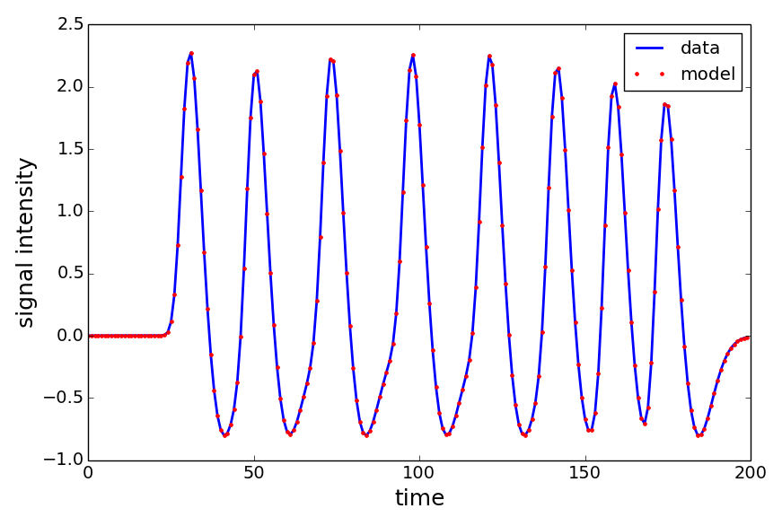

What is a population receptive field?
A population receptive field (pRF) is a quantitative model of the cumulative response of the population of cells contained within a single fMRI voxel. The pRF model allows us to interpret and predict the responses of a voxel to different stimuli. Such pRF models can be designed to describe a wide variety of sensory and cognitive processes.
Installation
Download the popeye source code from the GitHub repository. Links to the tarball and zip files are at the top of this page for your convenience. Using popeye requires that you have installed NumPy, SciPy, and Cython. Installing matplotlib is recommended as we'll be plotting the results of our pRF estimation but is not required for any of the model fitting procedures in popeye.
Once you've downloaded the popeye source code and installed the aforementioned dependencies, you'll need to install popeye and build the Cython extensions I've written for speeding up the analyses.
$ cd popeye
$ sudo python setup.py install build_ext
$ python
>>> import popeye
>>> popeye.__version__
'0.1.0.dev'
Getting started
Below is a small demonstration of how to interact with the popeye API. Here, we'll generate our stimulus and simulate the BOLD response of a Gaussian pRF model estimate we'll just invent. Normally, we'd be analyzing the BOLD time-series that we collect while we present a participant with a visual stimulus.
import popeye.utilities as utils
import popeye.gaussian as gaussian
from popeye.visual_stimulus import VisualStimulus, simulate_bar_stimulus
from popeye.spinach import MakeFastGaussPrediction
from scipy.signal import fftconvolve
# set the screen properties
pixels_across = 800 # pixels
pixels_down = 600 # pixels
viewing_distance = 38 # cm
screen_width = 25 # cm
# set the bar stimulus properties
thetas = np.arange(0,360,45) # degrees
eccentricity- = 10 # degrees
num_steps = 20 # integer
# set the timing and scale properties
tr_length = 1.0 # seconds
frames_per_tr = 1 # integer
scale_factor = 0.05 # scaling factor between 0 and 1
# create the sweeping bar stimulus in memory
bar = simulate_bar_stimulus(pixels_across, pixels_down, viewing_distance,
screen_width, thetas, num_steps, eccentricity)
# create an instance of the Stimulus class
stimulus = VisualStimulus(bar, viewing_distance, screen_width,
scale_factor, frames_per_tr)
# set up bounds for the grid search
search_bounds = ((-10,10),(-10,10),(0.25,5.25),(-5,5),(0.1,1e2))
fit_bounds = ((-12,12),(-12,12),(1/stimulus.ppd,12),(-5,5),(0.1,1e2))
# initialize the gaussian model
model = gaussian.GaussianModel(stimulus)
# invent a pRF estimate
x = -5.24 # degrees
y = 2.583 # degrees
sigma = 1.24 # degrees
hrf_delay = -0.25 # seconds relative to canonical HRF (5 sec)
beta = 2.53 # amplitude
# make the stim time-series
stim = MakeFastGaussPrediction(stimulus.deg_x, stimulus.deg_y,
stimulus.stim_arr,
x, y, sigma)
# create the HRF
hrf = utils.double_gamma_hrf(hrf_delay, tr_length, frames_per_tr)
# simulate the BOLD response
data = fftconvolve(stim,hrf)[0:len(stim)] * beta
# fit the response
fit = gaussian.GaussianFit(data, model, search_bounds, fit_bounds, tr_length)
Below is the output of the model fit we invoked in the code block above. Notice that the model fits the data perfectly (the residual sum of squared error is approximately 0). This may seem somewhat circular in that we've invented a pRF estimate and BOLD time-series only to then fit the "data" to derive the invented pRF estimate we started with in the first place. However, this approach is useful for writing tests to ensure robustness of the fitting procedures during development and for demonstrating the functionality of popeye.
Authors and Contributors
Popeye was created by Kevin DeSimone (@kdesimone) with significant contributions and guidance from Ariel Rokem (@arokem).
Support or Contact
Having trouble with popoeye? Contact kevindesimone@gmail.com and I'll help you sort it out.